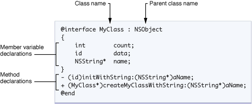
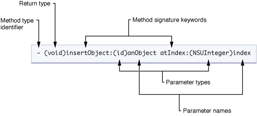

Objective-C is a simple computer language designed to support true object-oriented programming.
Objective-C extends the standard ANSI C language by providing syntax for class definitions, methods, and properties, as well as other constructs that enhance the dynamic extensibility of classes. The syntax and design of classes are mainly based on Smalltalk, one of the earliest object-oriented programming languages.
If you have used other object-oriented programming languages before, the following information can help you learn the basic syntax of Objective-C. Many traditional object-oriented concepts, such as encapsulation, inheritance, and polymorphism, are reflected in Objective-C. There are some important differences, but these differences will be explained in this article, and more detailed information is available if you need it.
If you have never programmed in any programming language, you should at least have a basic understanding of related concepts before starting. The use of objects and object-oriented architecture are the foundation of iPhone programming; understanding how they interact is very important for creating your programs. To learn about object-oriented concepts, please refer to Object-Oriented Programming with Objective-C.
Objective-C: A Superset of C
Objective-C is a strict superset of C -- any C program can be compiled directly through an Objective-C compiler without modification, and it is completely legal to use C code in Objective-C. Objective-C is described as a thin layer on top of C, because the original intention of Objective-C was to add object-oriented features to the C language.
File Extensions for Objective-C Code
| Extension | Content Type |
| .h | Header file. Header files contain declarations of classes, types, functions, and constants. |
| .m | Source code file. This is the typical source code file extension and can contain both Objective-C and C code. |
| .mm | Source code file. A source code file with this extension can contain C++ code in addition to Objective-C and C code. Use this extension only when you really need to use C++ classes or features in your Objective-C code. |
When you need to include header files in source code, you can use the standard #include compilation directive, but Objective-C provides a better way. The #import directive is exactly the same as #include, except that it ensures the same file is included only once. Objective-C examples and documentation tend to use #import, and your code should do the same.
Syntax
Objective-C's object-oriented syntax originates from the Smalltalk message-passing style. All other non-object-oriented syntax, including variable types, the preprocessor, flow control, and function declaration and invocation, is exactly the same as C. However, some legal C syntax may not express the same meaning in Objective-C. For example, certain boolean expressions return true in C, but if compared directly with YES in Objective-C, the function will error, because YES in Objective-C only has a value of 1.
The first Objective-C program, based on Xcode 4.3.1:
#import <Foundation/Foundation.h>
int main(int argc, char *argv[]) {
@autoreleasepool {
NSLog(@"Hello World!");
}
return 0;
}
Message Passing
Objective-C's most notable feature is the message passing model inherited from Smalltalk, which is quite different from the mainstream C++-style approach today. In Objective-C, it is more accurate to say that objects pass messages to each other rather than call methods on each other. The main difference between the two styles lies in the action of calling methods / passing messages. In C++, the relationship between classes and methods is strict and clear: a method must belong to a class and is tightly bound at compile time, so it is impossible to call a method that does not exist in a class. But in Objective-C, the relationship between classes and messages is looser. Calling a method is regarded as sending a message to an object, and all methods are regarded as responses to messages. All message handling is dynamically determined only at runtime, and it is left to the class to decide how to handle received messages. That is to say, a class is not guaranteed to respond to every received message. If a class receives a message it cannot handle, the program only throws an exception; it does not error or crash.
In C++, the syntax to send a message to an object (or call a method) is as follows:
obj.method(argument);
In Objective-C, it is written as:
[obj method: argument];
These two are not only syntactically different, but also differ in fundamental behavior.
Here is a simple example of a car class to explain the message-passing feature of Objective-C:
[car fly];
The typical C++ interpretation is "call the fly method of the car class." If the car class does not define a fly method, compilation will definitely fail. But in Objective-C, we should interpret it as "send a fly message to the car object." fly is the message, and car is the receiver of the message. After receiving the message, car decides how to respond to it. If the car class defines a fly method, the code inside the method is run; if the car class does not have a fly method, the program still compiles, and an exception is thrown at runtime.
The two styles each have their advantages and disadvantages. C++ requires all methods to have corresponding actions, and compile-time binding makes function calls very fast. The downside is that it can only provide limited dynamic binding ability through the virtual keyword. Objective-C is inherently capable of duck typing and dynamic binding because messages are processed at runtime, allowing unknown messages to be sent to objects. It can send messages to an entire collection of objects without checking each object's type one by one, and it also has a message forwarding mechanism. In addition, the null object nil does nothing by default after receiving a message, so sending a message to nil does not cause the program to crash.
Strings
As a superset of C, Objective-C supports C language string conventions. That is, single characters are enclosed in single quotes, and strings are enclosed in double quotes. However, most Objective-C code generally does not use C-style strings. Instead, most frameworks pass strings as NSString objects. The NSString class provides a class wrapper for strings, including all the advantages you would expect, such as built-in memory management for storing strings of arbitrary length, Unicode support, printf-style formatting utilities, and so on. Because this type of string is used so frequently, Objective-C provides a mnemonic to conveniently create NSString objects from constant values. To use this mnemonic, all you need to do is place an @ symbol before an ordinary double-quoted string, as shown in the following example:
NSString* myString = @"My String\n"; NSString* anotherString = [NSString stringWithFormat:@"%d %s", 1, @"String"]; // 从一个C语言字符串创建Objective-C字符串 NSString* fromCString = [NSString stringWithCString:"A C string" encoding:NSASCIIStringEncoding];
类
As with all other object-oriented languages, classes are the basic structure in Objective-C for encapsulating data and the behaviors that operate on that data. An object is a runtime instance of a class; it contains its own memory copy of the instance variables declared by the class, as well as pointers to the class members. The Objective-C class specification consists of two parts: the interface and the implementation. The interface part contains the class declaration, definitions of instance variables, and methods related to the class. The implementation part contains the actual code for the class methods.
The following diagram shows the syntax for declaring a class called MyClass, which inherits from the base class NSObject. A class declaration always begins with the @interface compiler directive and ends with the @end compiler directive. After the class name (separated by a colon) is the name of the parent class. The instance (or member) variables of the class are declared in a code block enclosed by braces. After the instance variable block is a list of methods declared by the class. Each instance variable and method declaration ends with a semicolon.
Class definition files follow C language conventions, with a .h suffix; implementation files use a .m suffix.
Class Declaration Diagram

Interface
The interface part clearly defines the name, data members, and methods of the class. It starts with the keyword @interface and ends with @end.
@interface MyObject : NSObject {
int memberVar1; // 实体变量
id memberVar2;
}
+(return_type) class_method; // 类方法
-(return_type) instance_method1; // 实例方法
-(return_type) instance_method2: (int) p1;
-(return_type) instance_method3: (int) p1 andPar: (int) p2;
@end
The +/- sign before a method indicates the type of function: plus (+) represents a class method, which can be called without an instance and is similar to a static member function in C++. Minus (-) represents an ordinary instance method.
Here is a comparison with similar C++ syntax, as follows:
class MyObject : public NSObject {
protected:
int memberVar1; // 实体变量
void * memberVar2;
public:
static return_type class_method(); // 類方法
return_type instance_method1(); // 实例方法
return_type instance_method2( int p1 );
return_type instance_method3( int p1, int p2 );
}
When Objective-C defines a new method, the colon (:) within the name represents parameter passing, unlike C, which uses parentheses like mathematical functions to pass parameters. Objective-C methods allow parameters to be interspersed within the name, rather than all appended at the end of the method name, which improves program readability. Taking the method for setting the RGB values of a color as an example:
- (void) setColorToRed: (float)red Green: (float)green Blue:(float)blue; /* 宣告方法*/ [myColor setColorToRed: 1.0 Green: 0.8 Blue: 0.2]; /* 呼叫方法*/
The signature of this method is setColorToRed:Green:Blue:. Each colon is followed by a parameter of type float, representing red, green, and blue respectively.
Implementation
The implementation block contains the implementations of public methods, as well as definitions of private variables and methods. It begins with the keyword @implementation and ends with @end.
@implementation MyObject {
int memberVar3; //私有實體變數
}
+(return_type) class_method {
.... //method implementation
}
-(return_type) instance_method1 {
....
}
-(return_type) instance_method2: (int) p1 {
....
}
-(return_type) instance_method3: (int) p1 andPar: (int) p2 {
....
}
@end
It is worth mentioning that not only can instance variables be defined in the Interface block, but the Implementation block can also define instance variables. The difference between the two lies in access control. Instance variables in the Interface block default to protected, while instance variables declared in the implementation block default to private. Therefore, defining private members in the Implementation block better matches the object-oriented encapsulation principle, because in this way the private information of the class does not need to be exposed in the public interface (.h file).
Creating Objects
In Objective-C, creating an object requires two messages: alloc and init. alloc is used to allocate memory, while init is used to initialize the object. Both init and alloc are methods defined in NSObject. Only after the parent object receives these two messages and responds correctly is the new object fully created. The following is an example:
MyObject * my = [[MyObject alloc] init];
In Objective-C 2.0, if creating an object does not require parameters, you can directly use new.
MyObject * my = [MyObject new];
It is merely syntactic shorthand; the effect is exactly the same.
If you want to customize the initialization process, you can override the init method to add extra work. (Its purpose is similar to the constructor in C++.)
Methods
Classes in Objective-C can declare two types of methods: instance methods and class methods. An instance method is a method that executes within the scope of a specific instance of the class. That is, before you call an instance method, you must first create an instance of the class. A class method, in comparison, means that you do not need to create an instance.
A method declaration includes the method type identifier, return type, one or more method selector keywords, and parameter type and name information. The following figure shows the declaration of the insertObject:atIndex: instance method. The declaration begins with a minus sign (-), indicating that this is an instance method. The actual name of the method (insertObject:atIndex:) is the concatenation of all method selector keywords, including colons. The colon indicates the presence of a parameter. If a method has no parameters, you can omit the colon after the first (and only) method selector keyword. In this example, the method has two parameters.
Method Declaration Syntax

When you want to call a method, you send a message to the corresponding object. Here, the message is the method selector along with the parameter information passed to the method. All messages sent to an object are dynamically dispatched, which facilitates polymorphic behavior in Objective-C classes. That is, if a subclass defines a method with the same selector as the parent class, the subclass receives the message first and can then optionally forward the message (or choose not to forward it) to its parent class.
Messages are enclosed in square brackets ([ and ]). Inside the brackets, the object receiving the message is on the left, and the message (including any parameters the message requires) is on the right. For example, to send the insertObject:atIndex: message to the myArray variable, you would use the following syntax:
[myArray insertObject:anObj atIndex:0];
To avoid declaring too many local variables to hold temporary results, Objective-C allows you to use nested messages. The return value of each nested message can be used as an argument or target for other messages. For example, you can replace any variable in the previous example with any message that obtains a value of that type. So, if you have another object called myAppObject with methods that can access the array object and insert an object into an array, you could rewrite the previous example as follows:
[[myAppObject getArray] insertObject:[myAppObject getObjectToInsert] atIndex:0];
Although the previous examples all send messages to an instance of a class, you can also send messages to the class itself. When sending a message to a class, the method you specify must be defined as a class method, not an instance method. You can think of class methods as somewhat similar to static members in C++ classes (but not exactly the same).
Typical uses of class methods are as factory methods for creating new class instances, or as a way to access shared information related to the class. The syntax for declaring class methods is almost exactly the same as for instance methods, with only one small difference. Unlike instance methods which use a minus sign as the method type identifier, class methods use a plus sign (+).
The following example demonstrates how a class method can serve as a factory method for a class. Here, arrayWithCapacity is a class method of the NSMutableArray class that allocates and initializes a new instance of the class and then returns it to you.
NSMutableArray* myArray = nil; // nil 基本上等同于 NULL // 创建一个新的数组，并把它赋值给 myArray 变量 myArray = [NSMutableArray arrayWithCapacity:0];
Properties
Properties are a convenient way to replace the declaration of accessor methods. Properties do not create a new instance variable in your class declaration. They are simply a shorthand way to define methods that access existing instance variables. A class that exposes instance variables can use property notation instead of getter and setter syntax. Classes can also use properties to expose "virtual" instance variables, which are the result of dynamically computing part of the data rather than actually being stored in an instance variable.
In fact, it can be said that properties save you from writing a large amount of redundant code. Since most accessor methods are implemented in similar ways, properties avoid the need to provide different getters and setters for each instance variable exposed by the class. Instead, you specify the behavior you want with a property declaration, and the actual getter and setter methods are synthesized at compile time based on the declaration.
Property declarations should be placed where method declarations are in the class interface. The basic definition uses the @property compiler directive, followed by type information and the property name. You can also configure the property with custom options, which determine the behavior of the accessor methods. The following example shows some simple property declarations:
@interface Person : NSObject {
@public
NSString *name;
@private
int age;
}
@property(copy) NSString *name;
@property(readonly) int age;
-(id)initWithAge:(int)age;
@end
The property's accessor methods are implemented by the @synthesize keyword, which automatically generates a pair of accessor methods from the property declaration. Alternatively, the @dynamic keyword can be used to indicate that the accessor methods will be provided manually by the programmer.
@implementation Person
@synthesize name;
@dynamic age;
-(id)initWithAge:(int)initAge
{
age = initAge; // 注意：直接赋给成员变量，而非属性
return self;
}
-(int)age
{
return 29; // 注意：并非返回真正的年龄
}
@end
Properties can be accessed using traditional message expressions, dot expressions, or the "valueForKey:" / "setValue:forKey:" method pair.
Person *aPerson = [[Person alloc] initWithAge: 53];
aPerson.name = @"Steve"; // 注意：点表达式，等于[aPerson setName: @"Steve"];
NSLog(@"Access by message (%@), dot notation(%@), property name(%@) and direct instance variable access (%@)",
[aPerson name], aPerson.name, [aPerson valueForKey:@"name"], aPerson->name);
To use dot expressions to access an instance's properties, you need to use the "self" keyword:
-(void) introduceMyselfWithProperties:(BOOL)useGetter
{
NSLog(@"Hi, my name is %@.", (useGetter ? self.name : name)); // NOTE: getter vs. ivar access
}
Properties of a class or protocol can be read dynamically.
int i;
int propertyCount = 0;
objc_property_t *propertyList = class_copyPropertyList([aPerson class], &propertyCount);
for ( i=0; i < propertyCount; i++ ) {
objc_property_t *thisProperty = propertyList + i;
const char* propertyName = property_getName(*thisProperty);
NSLog(@"Person has a property: '%s'", propertyName);
}
Fast Enumeration
Compared to using NSEnumerator objects or enumerating collections in sequence, Objective-C 2.0 provides fast enumeration syntax. In Objective-C 2.0, the following loops are functionally equivalent, but they have different performance characteristics.
// 使用NSEnumerator
NSEnumerator *enumerator = [thePeople objectEnumerator];
Person *p;
while ( (p = [enumerator nextObject]) != nil ) {
NSLog(@"%@ is %i years old.", [p name], [p age]);
}
// 使用依次枚举
for ( int i = 0; i < [thePeople count]; i++ ) {
Person *p = [thePeople objectAtIndex:i];
NSLog(@"%@ is %i years old.", [p name], [p age]);
}
// 使用快速枚举
for (Person *p in thePeople) {
NSLog(@"%@ is %i years old.", [p name], [p age]);
}
Fast enumeration can produce more efficient code than standard enumeration, because the methods invoked by enumeration are replaced by pointer arithmetic operations provided by the NSFastEnumeration protocol.
Protocols
A protocol is a list of methods without implementations. Any class can adopt a protocol and specifically implement this set of methods.
During the NeXT era, Objective-C once attempted to introduce the concept of multiple inheritance, but it was not implemented due to the emergence of protocols.
Protocols are similar to "interfaces" in Java and C#. In Objective-C, there are two ways to define protocols: "formal protocols" guaranteed by the compiler, and "informal protocols" established for specific purposes.
Informal ProtocolsIt is a list of methods that can be optionally implemented. Although informal protocols are called protocols, they are actually a designation for an unimplemented category attached to NSObject. There is no such thing as an informal protocol in the Objective-C language mechanism. After OS X 10.6, the introduction of the @optional keyword gave formal protocols the same capability, so informal protocols have been deprecated and are no longer used.
Formal ProtocolsSimilar to "interfaces" in Java, it is a list of methods. Any class can declare that it implements a certain protocol. Before Objective-C 2.0, a class had to implement all methods in the protocol it declared to conform to; otherwise, the compiler would report an error indicating that the class did not implement all methods of the protocol it declared to conform to. Objective-C 2.0 allows certain methods in a protocol to be marked as optional, so the compiler will not enforce the implementation of these optional methods.
Protocols are often used in Cocoa for delegation and event triggering. For example, a text field class typically includes a delegate object, which can implement a protocol that may contain a method for implementing autocompletion of text input. If the delegate object implements this method, the text field class will trigger the autocomplete event at the appropriate time and call this method for the autocomplete feature.
The concept of protocols in Objective-C is not exactly the same as the concept of interfaces in Java. That is, a class can implement the methods contained in a protocol without declaring that it conforms to that protocol, thus effectively conforming to the protocol; this difference is invisible to external code. The declaration of a formal protocol does not provide implementations; it simply indicates that classes conforming to the protocol have implemented the protocol's methods, ensuring that the calling side can safely invoke the methods.
Syntax
A protocol starts with the keyword @protocol as the beginning of the block and ends with @end, with the method list in between.
@protocol Locking - (void)lock; - (void)unlock; @end
This is an example of a protocol. In multithreaded programming, it is often necessary to ensure that a shared resource can only be used by one thread at a time, so a lock is attached to the resource before use. The above is a protocol that expresses the concept of a "lock". The protocol has two methods, which have names but are not yet implemented.
In the following, SomeClass declares that it adopts the Locking protocol:
@interface SomeClass : SomeSuperClass <Locking> @end
Once SomeClass declares that it adopts the Locking protocol, SomeClass is obligated to implement the two methods in the Locking protocol.
@implementation SomeClass
- (void)lock {
// 實現lock方法...
}
- (void)unlock {
// 實現unlock方法...
}
@end
Since SomeClass already conforms to the Locking protocol, the caller can safely send lock or unlock messages to a SomeClass instance variable without worrying that it cannot respond to messages.
Plugins are another example of using abstract definitions, allowing desired behavior to be defined without caring about the implementation of the plugin.
Dynamic Typing
Similar to Smalltalk, Objective-C has dynamic typing: messages can be sent to any object entity, regardless of whether the object's public interface has a corresponding method. Compared with statically typed languages like C++, the compiler will block method calls on (void*) pointers. But in Objective-C, you can send any message to id (id is much like void*, but strictly limited to objects); the compiler only issues a warning that "the object may not respond to the message". The program can still compile, and what actually happens depends on the real form of the object at runtime. If the object can indeed respond to the message, the corresponding method still runs.
After an object receives a message, it has three possible ways to handle it. First, it can respond to the message and run the method. If it cannot respond, it can forward the message to another object. If neither of the above is done, it must handle the exception thrown for non-response. As long as one of the three is done, the message is considered completed and discarded. If a message is sent to "nil" (null object pointer), the message is usually ignored; depending on compiler options, it may throw an exception.
Although Objective-C has dynamic typing capabilities, compile-time static type checking can still be applied to variables. The following three declarations are completely equivalent at runtime, but each provides progressively more explicit type information. The additional type information allows the compiler to check variable types at compile time and issue warnings for mismatched variables.
The following three methods differ only in the form of the parameter:
- setMyValue:(id) foo;
The id form indicates that the parameter "foo" can be an instance of any class.
- setMyValue:(id <aProtocol>) foo;
id<aProtocol> indicates that "foo" can be an instance of any class, but must adopt the "aProtocol" protocol.
- setMyValue:(NSNumber*) foo;
This declaration indicates that "foo" must be an instance of "NSNumber".
Dynamic typing is a powerful feature. When implementing container classes in statically typed languages lacking generics (such as versions before Java 5), programmers needed to write a container class for generic type objects and then constantly cast between generic and actual types. However, type casting breaks static typing; for example, writing an "integer" and reading it as a "string" causes a runtime error. Such problems are solved by generics, but container classes require consistent types for their content objects, whereas dynamic typing languages have no such problem at all.
Forwarding
Objective-C allows sending a message to an object regardless of whether it can respond to it. Besides responding to or discarding messages, an object can also forward the message to an object that can respond to it. Forwarding can be used to simplify certain design patterns, such as the observer pattern or proxy pattern.
The Objective-C runtime defines a pair of methods in Object:
Forwarding Method:
- (retval_t) forward:(SEL) sel :(arglist_t) args; // with GCC - (id) forward:(SEL) sel :(marg_list) args; // with NeXT/Apple systems
Responding Method:
- (retval_t) performv:(SEL) sel :(arglist_t) args; // with GCC - (id) performv:(SEL) sel :(marg_list) args; // with NeXT/Apple systems
An object that wishes to implement forwarding only needs to override the above methods with new methods to define its forwarding behavior. There is no need to rewrite the response method performv::, because that method simply sends a message to the responding object and passes the parameters. Among them, the SEL type is the type of messages in Objective-C.
The following code demonstrates the basic concept of forwarding:
Forwarder.h file code:
#import <objc/Object.h>
@interface Forwarder : Object
{
id recipient; //该对象是我们希望转发到的对象。
}
@property (assign, nonatomic) id recipient;
@end
Forwarder.m file code:
#import "Forwarder.h"
@implementation Forwarder
@synthesize recipient;
- (retval_t) forward: (SEL) sel : (arglist_t) args
{
/*
*检查转发对象是否响应该消息。
*若转发对象不响应该消息，则不会转发，而产生一个错误。
*/
if([recipient respondsTo:sel])
return [recipient performv: sel : args];
else
return [self error:"Recipient does not respond"];
}
Recipient.h file code:
#import <objc/Object.h> // A simple Recipient object. @interface Recipient : Object - (id) hello; @end
Recipient.m file code:
#import "Recipient.h"
@implementation Recipient
- (id) hello
{
printf("Recipient says hello!\n");
return self;
}
@end
main.m file code:
#import "Forwarder.h"
#import "Recipient.h"
int main(void)
{
Forwarder *forwarder = [Forwarder new];
Recipient *recipient = [Recipient new];
forwarder.recipient = recipient; //Set the recipient.
/*
*转发者不响应hello消息！该消息将被转发到转发对象。
*（若转发对象响应该消息）
*/
[forwarder hello];
return 0;
}
When compiling with GCC, the compiler reports:
$ gcc -x objective-c -Wno-import Forwarder.m Recipient.m main.m -lobjc main.m: In function `main': main.m:12: warning: `Forwarder' does not respond to `hello' $
As mentioned earlier, the compiler reports that the Forwarder class does not respond to the hello message. In this case, because forwarding is implemented, this warning can be ignored. Running the program produces the following output:
$ ./a.out Recipient says hello!
Categories
In the design of Objective-C, a major consideration is the maintenance of large code frameworks. Experience with structured programming shows that a major way to improve code is to break it into smaller pieces. Objective-C borrows and extends the "category" concept from the Smalltalk implementation to help achieve the goal of decomposing code.
A category can decompose method implementations into a series of separate files. Programmers can put a group of related methods into a category to make the program more readable. For example, a category named "spell checking" can be added to the string class, and the relevant spell-checking code can be placed into that category.
Furthermore, methods in a category are added to the class at runtime. This feature allows programmers to add methods to existing classes without having the original code or recompiling the original class. For example, if the system-provided string class implementation does not include spell checking functionality, such functionality can be added without changing the original string class code.
At runtime, methods in a category are no different from the class's original methods, and their code can access all member variables, including private class member variables.
If a category declares a method with the same name as an existing method in the class, the method in the category will be called. Therefore, categories can not only add methods to a class, but also replace original methods. This feature can be used to fix bugs in original code, and can even fundamentally change the behavior of the original classes in a program. If methods in two categories have the same name, which method is called is unpredictable.
Other languages have also tried to add this language feature through different methods. TOM goes further in this regard, allowing not only methods to be added, but also member variables. Other languages use declaration-oriented solutions, the most notable being the Self language.
C# and Visual Basic.NET implement similar functionality through extension methods and partial classes. Ruby and some dynamic languages call this technique "monkey patch".
Example of Using Categories
This example creates an Integer class, which itself only defines the integer property, and then adds two categories, Arithmetic and Display, to extend the functionality of the class. Although categories can access the private members of the class, it is usually better practice to access them through property accessor methods, making the categories more independent from the original class. This is a typical use of categories—another use is to replace methods in the original class with categories, although using categories rather than inheritance to replace methods is not considered good practice.
Integer.h file code:
#import <objc/Object.h>
@interface Integer : Object
{
@private
int integer;
}
@property (assign, nonatomic) integer;
@end
Integer.m file code:
#import "Integer.h" @implementation Integer @synthesize integer; @end
Arithmetic.h file code:
#import "Integer.h" @interface Integer(Arithmetic) - (id) add: (Integer *) addend; - (id) sub: (Integer *) subtrahend; @end
Arithmetic.m file code:
#import "Arithmetic.h"
@implementation Integer(Arithmetic)
- (id) add: (Integer *) addend
{
self.integer = self.integer + addend.integer;
return self;
}
- (id) sub: (Integer *) subtrahend
{
self.integer = self.integer - subtrahend.integer;
return self;
}
@end
Display.h file code:
#import "Integer.h" @interface Integer(Display) - (id) showstars; - (id) showint; @end
Display.m file code:
#import "Display.h"
@implementation Integer(Display)
- (id) showstars
{
int i, x = self.integer;
for(i=0; i < x; i++)
printf("*");
printf("\n");
return self;
}
- (id) showint
{
printf("%d\n", self.integer);
return self;
}
@end
main.m file code:
#import "Integer.h"
#import "Arithmetic.h"
#import "Display.h"
int
main(void)
{
Integer *num1 = [Integer new], *num2 = [Integer new];
int x;
printf("Enter an integer: ");
scanf("%d", &x);
num1.integer = x;
[num1 showstars];
printf("Enter an integer: ");
scanf("%d", &x);
num2.integer = x;
[num2 showstars];
[num1 add:num2];
[num1 showint];
return 0;
}
Compile with the following command:
gcc -x objective-c main.m Integer.m Arithmetic.m Display.m -lobjc
At compile time, you can experiment by omitting #import "Arithmetic.h", the [num1 add:num2] command, and the Arithmetic.m file. The program will still run, which shows that categories can be loaded dynamically and on demand; if a category's functionality is not needed, you can simply not compile it.
Garbage Collection
Objective-C 2.0 provides an optional garbage collector. In backward-compatible mode, the Objective-C runtime turns reference counting operations such as "retain" and "release" into no-ops. When garbage collection is enabled, all objects are objects under the collector's management. Ordinary C pointers can be modified with "__strong", indicating that the object pointed to by the pointer is still in use. Pointers marked "__weak" are not counted by the collector, and are rewritten to "nil" when the object is collected. The Objective-C 2.0 implementation on iOS does not include a garbage collector. The garbage collector runs on a low-priority background thread and can pause when the user acts, thereby maintaining a good user experience.
Reference link: https://zh.wikipedia.org/wiki/Objective-C
Click me to share notes
<p style="font-size:14px;">Notes need to be an extension of the content of this article!</p><br> <p style="font-size:12px;"><a href="../tougao.html" target="_blank">Article submission, you can click here</a></p> <p style="font-size:14px;"><a href="./runoob-user-test-intro.html" target="_blank">How to get registration invitation code</a></p> <h3 class="text-muted"><i class="fa fa-info-circle" aria-hidden="true"></i> Before sharing notes, you must <a href=".." class="runoob-pop">log in</a>!</h3> <p><a href="./runoob-user-test-intro.html" target="_blank">How to get registration invitation code</a></p>